<div [ngClass]="{'theme-light': !isDarkTheme, 'theme-dark': isDarkTheme}" style="height:100%">
  <mat-toolbar class="d-flex justify-content-end">
    
    <!-- <div [ngClass]="{'animated fadeInRight delay-4s': !hasSeenLandingAnimation}"> -->
    <mat-slide-toggle [ngClass]="{'ml-2': true, 'animated fadeInLeft delay-4s': !hasSeenLandingAnimation}"
      (toggleChange)="toggleTheme()" style="font-size:0.65em">
      {{ isDarkTheme ? 'Light' : 'Dark' }}
    </mat-slide-toggle>
    <div class="spacer"></div>
    <button mat-button [matMenuTriggerFor]="menu"
      [ngClass]="{'animated fadeInRight delay-4s': !hasSeenLandingAnimation}">
      <mat-icon>menu</mat-icon>
    </button>
    <mat-menu #menu="matMenu">
      <button mat-menu-item>Docs</button>
      <button mat-menu-item>Projects</button>
      <button mat-menu-item>About</button>
    </mat-menu>
    <!-- </div> -->
  </mat-toolbar>
  <router-outlet></router-outlet>
</div>